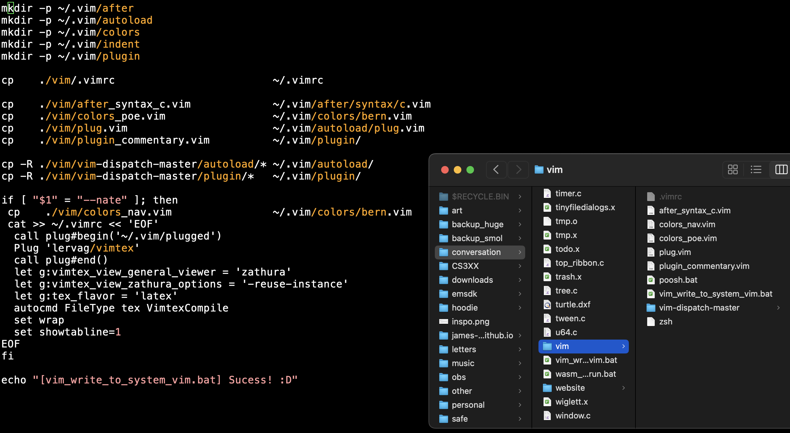

make your code base a home base
non-fragile vim-setup
solve the problem of having to set up vim whenever you get a new laptop
this last time i got a new computer, and i found myself struggling to set up vim again ("where is my .vimrc?" "where is my colorscheme file?" "where am i supposed to put these files?" "where do i download my packages?" "how do i install my packages?" etc. etc. etc.)...
...i realized that i was probably doing something wrong.
so, as recommended by Casey Muratori, i wrote the usage code first (i.e., i asked myself "what do i really want?")
the dream: when i get a new computer, i want to (1) clone my codebase (which has all my code, including some file called vim_setup.sh), and (2) run vim_setup.sh and have it perfectly sets up my vim (like a build_and_run.bat, but for vim setup)
i would also like to be able to run this file whenever i make changes to my .vimrc or colorscheme file or whatever
such a vim setup script is possible! :D
one might think this script is some very magical, complicated thing that needs to curl and git submodule and pathogen infect VimPlug puppet ???, but this would be incorrect
the reason it's incorrect is that, at least on all my Macbooks, "configure vim" literally means "set the contents of file ~/.vimrc and folder ~/.vim/"
so, if my codebase contains my .vimrc file and .vim/ folder...
("contains their literal contents" NOT "contains some script or submodule hook or recipe or etc. etc. etc.")
...then all vim_setup.sh needs to do is copy the contents of my repo's vim folder into my computer's home directory; behold!

note: this idea extends immediately to multiple profiles (you can give vim_setup.sh command line arguments, or just have multiple vim_setup.sh's)
note: for me personally, pathogen, vundle, and vim-plug don't solve a real world problem.
when i find a vim plugin i want, i just manually copy its files into my codebase.
i have no interest in updating any of my plugins ever
note: it scares me that the typical approach to solving this problem (e.g., vim-plug) requires (1) me to have an internet connection, (2) every plugin author to leave their GitHub repos up publicly forever and never make breaking changes, and (3) GitHub itself to be up --
why are we solving such a trivial problem with so many dependencies?